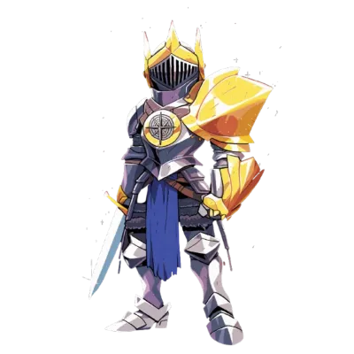

즈언통 아니겠습니까
당신
어떤 물질로 만들었는지 알 수 없는 그러한 건축 양식을 가지고 있군요
"이렇게 생긴 도시를 본 적이 없는데."
그리고 그들을 이끄는 대장격으로 보이는 사람은 자신을 '기드온'이라는 이름으로 소개했습니다. 어떤 종족인지 알 수 없군요

그러면서 여러분한테 저들 병사 같은 얼굴 가리게 같은 것을 건내줍니다
"얼굴을 가린다니, 모두의 손실이로군."
@턱 브이
@암튼 씁니다

"그래서 몇가지 물어보고 싶은게 있는데.. 나쁘게는 대하지 않을게요."
"소속은 밸러라이트지. 이쪽 애기대로."
"이 주변은 엄청 돌아다녔는데 한번도 본 적 없어요"
"진짜로 차원이 다른가 본데?"
@얘네 진짜 모르나
통찰
22
호의와 함께 호기심으로 가득한 그런 느낌이 듭니다
"뭐 아무튼 우린 그런 사람들이고"
"반대로 우린 이쪽의 역사를 전혀 몰라서 그러는데, 간단하게라도 들을 수 있으려나?"
"아무래도 이런저런 얘기 할려면 꽤 시간이 걸릴 것 같으니까요"
"삼셸은 우리의 신인'맛다니야' 님이 지켜주시는 찬란한 도시랍니다"
"그리고 큰 분쟁과 다툼 없이 긴 시간 동안 번영했다고 배웠어요:"
@아는 이름인지 생각해봅니다
"그렇게 어려운 내용은 잘 몰라요. 그렇네요../"
"그런 내용은 우리 '인도자'님이 아실거에요. 그분은 모르는게 없으시니까"
@여기에 오기 전의 기록관이 이름이랑 유사해서 동일 인물인가 하고 생각 중
좋습니다. 요한 그러면 불리점 받고 굴려주세요
정보가 너무 적어서 불리점입니다ㅓ
Guidance
종교학
11
종교학
14
'
뭔가 더 '잘아는 사람' 을 보거나 '신전'을 확인할 수 있다면
더 좋은 정보를 얻기 위해 시도해볼 수 있을 것 같습니다
"직접 대면해서 좀 더 알아보는 것이 좋겠습니다."
"그건 그렇고 놀랐어요. 삼셸 외의 사람들은 처음보니까요"
@그러면서 창문이 있다면 바깥의 풍경을 구경합니다
갓디엘과 여러분만 얼굴을 가리고 있습니다
.....
날거인가요?
껍질은 푸석하고 내부는 물컹합니다
"못읽겠다"
역사학
26
"몇몇은 너무 변형 되어서 읽기가 좀 난감하지만요"
"그러면 대충 짚이는 거라도 뭔가 나올지도 모르지."
지능
14
여기서
지나가던 바드의 버프를 받아줘!
1d10 + 1d4
11
똑똑해져라 메디우스!
@혹시 방에 우리만 있나요 아니면 갓디엘이랑 같이 있나요?
"그 전창 양반 성격상 종이를 슬쩍 줄 것 같지는 않고...누구일려나 한번 해볼래요?"
"들어보니 그 인도자분을 만나는게 상당히 힘든 일인가 봐요?"
모든 감정이 바깥에 튀어나와있단 느낌이 듭니다
@가방에서 여기 오기 전에 들고왔던 식료품 몇개 꺼냅니다
"자요. 식사 준 보답으로 바깥 세상 음식도 한번 봐봐요. 재미있을걸요?"@식료품 주기
라고 말하며 뛸듯이 기뻐합니다
"그럼 우리는 한번 그 인도자님을 만나러 가볼까요?"
갓디엘들의 인도에 따라 어떤 곳으로 들어갑니다. 그곳은 화려한 불조명과 함께 다른곳과 확실하게 차이나는 화려한 장식이 있습니다. 그리고 중앙에는 높은 사람이 앉는 자리로 보이는 상석이 있고 그 곳에는 누군가 앉아있습니다.

무언가가 빼곡하게 적힌 책? 같은걸로 보입니다
"그럼 나머지 시간동안은...?"
"아무튼.. 이러한 이유 때문에 라파에서 뭔가를 한다고 해도."
"수천년 뒤에나 반응이 오겠지"
통찰로 진실을 말하는지 봅니다
천년아이 발동!
통찰
14
그러면 로키르의 말에 불쾌한듯 반응합니다
?!
"자네들은 이곳에 막 온 이방인이고 우리의 친절을 일방적으로 소비할 뿐인 존재 아닌가?"
갑자기 광풍이 불더니
?!
바깥 건물에서는 일제히 함성 소리가 들립니다
"진짜로 존재하는 신 맞나?"
"흠."
(매혹바드온
(찾았다 내 마스터 피스
"우리들의 신이시여"

아름다운 미소 on
매력
17
영감플러스 하겠습니다
엄허나
가만히 그녀의 머리를쓰다듬어봅니다
참는다
"제일 베스트라 생각했다만..."
"진짜 신 맞나?"
"오늘의 경험은 크게 가져가는게 좋을거같네"
라고 말하며 로키르의 다친 팔을 재생시켜줍니다
"그 가족에서 본인은 예외인 건가?"
"하지만.. 자기 자식도 잡아먹는 생물들이 분명히 있지"
"더 고귀하고 높은 곳에 있지. 우리는 이해 못할.."
"아까 이 도시가 불안정하다고 했지."
"그 이유중에 저 신께서도 포함되나?"
"우리가 받았던 의뢰는 탐사대의 행방이였어요. 근데 정작 와보니 1명을 제외한 나머지는 이미 세상을 떠났고"
"문제라면, 그 전창 양반은 아직도 모습이 안 보이고 저 신이라는 존재까지 있다..."
"돌아가긴 해야겠거든."
"필요하면 기아스라도 받아갈까?"
"그 전창 양반부터 찾아봅시다"
"기회는 수없이 지나가지만, 그걸 받을 수 있는 자는 손을 뻗고 기다리는 자입니다."
여러분을 노려봅니다
"물러가라. 그리고 가능하면 우리 사이가 조용히 지나갔으면 좋겠군"
"일단 탐사대는 전멸한걸로 쳐야겠어."
여러분이
숙소로 돌아오면 슬슬 사람들이 잘 시간이 되어보입니다. 이곳은 낮이고 밤이고 어두워서 잘 모르겠지만요
여러분은 어떻게 하겠습니까?
"이제 창문열어두면 되나?"
뭐랄까 그들의 감시는 굉장히 무릅니다
"이봐 지금 시간이면 밤인가 낮인가?"
"새벽이겠군요"
@졸려보이는거죠?
하면서
공연
29
"이제 잔다 경비"
몇시간이 지나자
배란다에 뭔가가 쿵 하고 떨어집니다
쉬어야한다
짧휴
그 쿵 하는 소리 만큼 묵직한 갑옷을 입은 남자입니다
경비는 잘자고 있군요
@소녀를 보며 말합니다
"너희들 외부인이지? 이 재미없는 깡통하고 독같이!"
"다친곳은 없어요?"
"뭐, 아무튼."
"사랑이지"
@본인과 로키르 쪽을 번갈아보며
"우린 몇시간전에 신을 만났지"
"사고는 그 신이 쳤지."
그러니까 여기 환경이?
@여자를 가리키고는 "이 분이랑 파트너십을 맺고 같이 활동을?"
"그러고보니 여러분은 온지 얼마 안돼어 느끼지 못했겠지만."
주기적으로 도시에서 어떤 곳으로 사람들을 보내는 것을 목격했습니다. 그러나 이상한 점은 돌아오는 사람은 없었다는 점입니다
"그 사람들 간 방향이 어디지?"
@그렇게 물으면서 아까 맛다니야 사라진 방향을 떠올립니다
@손등의 키스 인사
"제가 사과하겠습니다."
"여기선 어떻게 인사하지?"
한쪽 무릎을 꿇습니다
"이올라...라고 했죠? 어쩌다가 우리 선배랑 같이 어울리게 된거에요?"
"발할라 아닌가?"
"그리고 금지된 곳으로 가서 의식을 치르는거지"
"만약 거기에 반전이 있다면?"
"일단 선발대를 찾는다는 임무는 실패야."
"이상하지? 왜 원하지도 않는 녀석한테 그런 영광이 돌아간걸까.."
"확인할 방법도 알아."
@일단 맛다니야가 아까 날아서 사라진 방향이랑
@엘드릭이 말한 실종자들 향한 방향이 똑같은지 떠올려보고
"그 실종자들이 사라졌다는 곳으로 가 보자."
어느 곳 한곳을 결정해서 가볼 수 있겠군요
(맞을거임
"그쪽이 더 급할 것 같아."
"흔적이 있다면 사이코매트리라도 써볼게요"
"같이가자고"
@바로가나용
참의 종류로 보이는군요
그러면 아침이 되자 누군가가 문을 두드립니다
"앗, 저기 좋은 아침입니다"
@긴휴판정인가용
메디우스 알테메기아 HP +78
Gamemaster
로키르 오딘슨 HP -36
Gamemaster
로키르 오딘슨 HP +16
Gamemaster
로키르 오딘슨 HP +22
로키르 오딘슨 최대HP +11
Gamemaster
메디우스 알테메기아 HP +5
"어제는 처음으로 인도자님을 뵈었고.,."
"오늘은 제가 엘샤다이에 참석해도 된단 말을 들었어요. 저 뿐만 아니라 제 동료 갓디엘까지 무려 다섯이..이런 일은 한번도 없었거든요"
"그래... '거기까진 내가 해결하겠다'..."
"그게 이딴 식이란 말이지."
"이봐 친구"
"금지된 구역에는 자격 있는 사람 밖에 못가거든요"
Actor
"알다시피 최근에 우리를 포함해서 외부인이 많잖아."
"그곳을 탐사하는 게 우리가 받은 역할이야."
@로키르를 거든다
"즉 그 말은"
"비밀리에, 구두로였지만 말이야."
"이번 의식은 시간이 촉박하다면서"
굴려보세요
@크악
기만
30
쩐다
"그만큼 엘 샤다이의 진행을 확실하게 보호하기 위한 결단이라더군."
"물론 좋은 쪽으로요"
기드온을 속였군요 나쁜 친구들!
![]()
기드온이랑 같이 가는 대신에 이올라는 대기합니다.
"내 예상이 맞다면 그 엘 샤다이의 끝은 맛다니야의 뱃속이야."
@돌아가면 이 노래로 빌보드 1위를 노리겠다!
여러분은 여기가 문화적으로도 그렇게 발전되었단 느낌이 들지 않는군요
"센테라의 모든 상식을 틀어막고 있지."
"어울리는 군"
그것도 매우 오래 전에 방치된. 근데 삼셸하고는 명백하게 다르게 생겼습니다
"그러니까 퍼플웜이라거나 기타 등등 위험요소가 나타나도 전투에 합류할 게 아니라 생존에 집중할 것."
지혜 내성
18
지혜 내성
8
지혜 내성
24
지혜 내성
26
지혜 내성
18
지혜 내성
11
마스터
우먀먀! (공격)
요한 크레스요한 크레스 AC: 20
17
메디우스 알테메기아 우선권
9.15
프리드 하커스트 우선권
24.2
엘드릭 스톰본 우선권
22.14
카운터 참?
잠깐
지혜 내성
16
자르엘라 우선권
13.14
로키르 오딘슨 우선권
7.16
요한 크레스 우선권
13.17
Blue Slaad 우선권
18.15
Blue Slaad 우선권
22.15
Blue Slaad 우선권
22.15
Blue Slaad 우선권
7.15
@미
갓디엘 우선권
22.14
기드온 우선권
24.14
"그 앞은 전열이 어떻게든 막아보겠어."
@뭣
매혹 Charm
DC 17 로키르 오딘슨: 내성 굴림 8
지혜 내성
8
그게 dc18을 넘으면 인정
어셈블러
1d20 + 6
18
로키르 매혹 해제
(프리드한테 매혹당한다
(해제가 아니라 매혹당한거지
@그러고 슬레드 한놈 길막
그리고 괴물들은 뒤따라와... 여러분을 공격
Mutating Claw (공격)
자르엘라자르엘라 AC: 18
24
피해: 9 + 1
Mutating Claw (공격)
자르엘라자르엘라 AC: 18
12
Mutating Claw (공격)
자르엘라자르엘라 AC: 18
14
건강 내성
20
Mutating Claw
DC 15 자르엘라: 내성 굴림 20
징하고 신체가 변형되려고 합니다
원래부터 변형괴물인 자르엘라는 이 내성에 이점받습니다.
Mutating Claw
Noble Halberd (공격)
Blue SlaadBlue Slaad AC: 15
15
피해: 17 + 5
Hold the Line
Mutating Claw (공격)
갓디엘갓디엘 AC: 17
24
피해: 7 + 1
Mutating Claw
DC 15 갓디엘: 내성 굴림 22
"로키르 선배. 옆에 요한 씨도 어떻게 해 줘요"
"나머지는 알아서 처리하죠."
Noble Halberd (공격)
Blue SlaadBlue Slaad AC: 15
16
피해: 20 + 4
5핏
푸쉬가 안됩니다
보액 파이어볼
Fireball (Wand of Fireballs)
Fireball (Wand of Fireballs)
Fireball (Wand of Fireballs)
Fireball (Wand of Fireballs)
Fireball
DC 13 Blue Slaad: 내성 굴림 3 Blue Slaad: 내성 굴림 9
피해: 21
Blue Slaad HP -10
불에 그다지 고통스러워 하는 느낌이 아닙니다
Noble Halberd (공격)
Blue SlaadBlue Slaad AC: 15
22
피해: 13 + 6
Noble Halberd (공격)
Blue SlaadBlue Slaad AC: 15
27
피해: 22 + 5
"로키르까지 없으면 밀릴지도 모르겠군요."
@턴종
"프리드 혼자 괜찮겠습니까?"
Mutating Claw (공격)
프리드 하커스트프리드 하커스트 AC: 25
14
프리드를 향해서 마구 휘두릅니다
Mutating Claw (공격)
프리드 하커스트프리드 하커스트 AC: 25
16
Mutating Claw (공격)
프리드 하커스트프리드 하커스트 AC: 25
10
우먀먀! (공격)
요한 크레스요한 크레스 AC: 20
13
우먀먀! (공격)
요한 크레스요한 크레스 AC: 20
17
(ac가 너무 높아서 안맞아
떄리면 내성 굴림 재 굴림 허용하죠
(이럴 때 젤 좋은거 매미
기공
Mutating Claw (공격)
요한 크레스요한 크레스 AC: 20
11
Noble Halberd (공격)
요한 크레스요한 크레스 AC: 20
22
피해: 19 + 3
그리고 클리브
Noble Halberd (공격)
Blue SlaadBlue Slaad AC: 15
18
피해: 13 + 3
지혜 내성
14
"로키르 선배!"
Hybrid Transformation: Normal Form
"일단 로키르가 저 갓디엘들을 다 멈춰놔야 속이 좀 편하겠어."
Vicious Flail (공격)
Blue SlaadBlue Slaad AC: 15
23
피해: 14 + 11
Vicious Flail (공격)
Blue SlaadBlue Slaad AC: 15
20
피해: 13 + 2
지혜 내성
24
지혜 내성
19
지혜 내성
25
지혜 내성
14
Hypnotic Pattern
DC 18 엘드릭 스톰본: 내성 굴림 24 프리드 하커스트: 내성 굴림 14 자르엘라: 내성 굴림 25 요한 크레스: 내성 굴림 19 갓디엘: 내성 굴림 14 갓디엘: 내성 굴림 12 갓디엘: 내성 굴림 20 갓디엘: 내성 굴림 22 갓디엘: 내성 굴림 13 기드온: 내성 굴림 6 Blue Slaad: 내성 굴림 3 Blue Slaad: 내성 굴림 10
Beguiling Magic
DC 18 Blue Slaad: 내성 굴림 18
이거 슬라드 둘 빼고 사실상 다걸렸네
지혜 내성
18
발동
유리로 재굴림
갓디엘들은 건물 안으로 들어간 상태에서 더이상 들어가지 않는군요. 여러분은 어떻게 하겠습니까?
@나머지는 먼저 진입해서 말리시죠 피 좀 까이겠지만 저정도는 혼자서 가능함 (수정됨)
@그럼 먼저 진입
단호함
Hope for the future (공격)
엘드릭 스톰본엘드릭 스톰본 AC: 22
23
"안이 어떤지 좀 봐야겠어요"
"판단은 여러분에게 맡기죠."
우먀먀! (공격)
요한 크레스요한 크레스 AC: 20
19
우먀먀! (공격)
요한 크레스요한 크레스 AC: 20
15
ㅋㅋ
꾸깃
Blade of Destiny (유리함)
@때려서 정신 차리게 해봅니다
(?
(아니 갓디엘을
"뭐야 이건!"
Lute of Thunderous Thumping [Shillelagh] (공격)
메디우스 알테메기아메디우스 알테메기아 AC: 22
20
"그 중 한번은 내 베프한테 썼지."
"곤란하군."
매혹을 내 매혹으로 덯씌운다
@천천히 주변을 조사합니다
@철퇴를 들려다 "아, 괜찮으시구나"
"괜찮으십니까." @요한에게 안부를 묻습니다
"저도 그렇게 생각 하고 있어요"
조사
11
Guidance
그 발더게3 처럼
Bardic Inspiration
그러면 로키르도 굴려보세요
조사
4
조사
12
조사
7
메디는 좋아요 근데 그건 통찰이 되겠습니다
통찰
13
역사학
28
"저보다 낡았다는 이야기입니다."
"하지만 나머지는 그 어느것과도 유사하지 않습니다."
"역사가 긴 만큼의 무언가가 유혹을 하는거라면...이거 꽤 골치 아프겠어요"
2d10
14
Tireless
피해: 11
요한 크레스 임시HP +11
메디우스 알테메기아 HP -14
프리드 하커스트 HP -14
정신피해인지용
피로점이 더 어울리겠지만요
Tireless
피해: 10
다시 굴려보시죠
"가기전에"
"혹시 모르니 제 영감을"
Bardic Inspiration
Bardic Inspiration
Guidance
메디우스는 원한다면 조사로 굴려주세요
Speak with Animals
(아니면 조건부인건지
(어떤 능력 출전인가요
(저거 다 살펴보려면 시간 걸리니까
Guidance
비전학
20
비전학
21
통찰
25
찾고나서 말씀하시져, 비욘드에도 임포트 돼어있응께.)
조사
13
조사
25
그들이 어딘가로 향하는 것을 주목할 수 있습니다. 재단이 있는 쪽으로 가려고 어떻게든 했던 것을 기억합니다
@1번, 페이,핀드,언데드류 추적하는데 생존 이점
2번 만지는 물건의 역사 체크 이점 (사이코 매트리)
3번 청각이나 후각같은 짐승의 요소를 이용한 지혜 체크의 이점
어떤 원리로 묘사해야 되는지를
서로 알아야하죠
@아재요 돌아오이소
"요새는 해체하지 않고 왔기에 안전한 장소를 만들 수 없지만..."
Pass without Trace
메디우스 알테메기아 HP -5
Aid
최대체력은 각자해줘잉
로키르 오딘슨 최대HP +20
메디우스 알테메기아 HP +20
메디우스 알테메기아 최대HP +20
메디우스 알테메기아 최대HP +5
요한 크레스 HP +20
Gamemaster
로키르 오딘슨 HP +5
로키르 오딘슨 최대HP +5
구덩이 속으로 파볼트를 쏴봅니다
Fire Bolt (공격)
피해: 10
"누구 로프있나?"
@뚜벅뚜벅
플라이~
Fly (Cli Lyre)
"..."
@그리고 여기서 뭔가 뜯어먹힌 흔적이 있는지 봅니다
Light
Grim Psychometry
역사학
20
그리고 얼마 안가서 맛다니야가 산채로 뜯어먹고 남은 것은 여기에 버리는 것을 볼 수 있습니다
역사학
25
그렇게 이 마을은 멸망했군요
3d10
19
Cure Wounds
피해: 13
"정황 상 그 주문으로 여기 주민들이 죄다 먹힌 것 같아요"
"그런데 의문점이 하나 더 있어."
"그냥 짐승에게 고기 주는걸로 밖에 안 보였어요"
"그러면 우리에게 정신지배를 걸려고 든 놈은 뭐지?"
"맛다니야가 단순한 짐승이라도 그 짐승을 키운다고 얻는 이점이 무엇일까요?"
"르우는 그 괴물을 두려워하고 있었어."
"지금 이 참상이"
"르우 본인의 생존의 대가로 벌어진 거라면 대충 말은 되지."
"그러니 바깥의 존재를 숨긴거겠지"
"돼지 오줌보같은 녀석"
@퉷
"오늘 맛다니야인지 맛다시인지도 온다는 거지."
@칼을 뽑습니다.
쿵 하는 소리가 바깥에서 들립니다
마이 베스트 프렌드
이 괴물은 손에 갓디엘 둘을 들고 질질 옵니다
그리 긴 시간은 아니었을겁니다
"호위가 당했나"
@프리드에게 공통 수화를 합니다
그리고 남은 것을 구덩이에 툭 하고 던지는군요
'남은 하나마저 죽기 전에'
@공통 수화가 없다면... 못알아먹는다
그럼 바로 기습
메디우스 알테메기아 우선권
10.15
엘드릭 스톰본 우선권
5.14
요한 크레스 우선권
16.17
로키르 오딘슨 우선권
9.16
프리드 하커스트 우선권
29.2
1d20
16
1d20
7
1d20 + 3 + 0.16
9.16
1d20
1
동일하다
맛다니야 우선권
35.21
엘드릭
ㄳ
)
@무기 소환하고 기습합니다
단호함
(2024와서
(기습턴 그런거 없음
(이건 룰에 나와있는 사항
Sacred Weapon (공격)
프리드 하커스트프리드 하커스트 AC: 25
34
피해: 34
Sacred Weapon (공격)
로키르 오딘슨로키르 오딘슨 AC: 17
30
피해: 33
건강 내성
7
Uncanny Dodge
아하
그럼 하면안되지
(추가딜 이미 들어감
@지금부터 물리피해 레지스트
"그만 날뛰면 좋겠는데."
@가설에 의거
방금 공격받았을 때
매혹 Charm
DC 17 맛다니야: 내성 굴림 14
"이쁘장하게 생겨선 하는 짓이 그토록 난폭해서 쓰나." (수정됨)
"하던대로 하죠 뭐"
Just in Case (공격)
맛다니야맛다니야 AC: 22
17
피해: 10 + 5
Just in Case (공격)
맛다니야맛다니야 AC: 22
29
피해: 14 + 3
@이거 내성 없어요 확정임 (수정됨)
"어떤 놈이 괴물로 바꿔놓은 건지 궁금해졌어."
커맨더즈 스트라이크
Vicious Rapier (유리함)
맛다니야맛다니야 AC: 22
28
피해: 10 + 8
Sneak Attack
피해: 19
Just in Case (공격)
맛다니야맛다니야 AC: 22
29
피해: 11 + 6
Sneak Attack
피해: 0
2d6
8
레전더리 액션 씁니다
엘드릭 스톰본 HP +8
Shockwave of Glory
피해: 19
건강 내성
14
건강 내성
24
건강 내성
21
건강 내성
8
건강 내성
16
요한 크레스 HP -10
요한 크레스 HP -9
건강 내성
7
메디우스 알테메기아 HP -19
건강 내성
11
Command
DC 17 맛다니야: 내성 굴림 26
마법이 잘 통하지 않습니다
Spray of Cards
DC 15 맛다니야: 내성 굴림 16
피해: 20
1d6
3
Divine Ray
Divine Ray (불리함)
엘드릭 스톰본엘드릭 스톰본 AC: 26
19
피해: 31
(잘못 굴림
1d8
4
"퇴각 합시다. 계속 싸우면 우리가 불리해요"
Vicious Flail (공격)
맛다니야맛다니야 AC: 22
14
Vicious Flail (공격)
맛다니야맛다니야 AC: 22
26
피해: 13 + 9
Brand of Castigation
(퇴각 전에 깔기로도 제격
Vicious Flail (공격)
맛다니야맛다니야 AC: 22
17
피해: 9 + 5
Vicious Flail (공격)
맛다니야맛다니야 AC: 22
12
피해: 13 + 5
일단 자리부터 다시잡아야하나
Bolster
피해: 10
Mantle of Majesty
Mantle of Majesty: Command
DC 18 맛다니야: 내성 굴림 29
아무래도 마법 자체에 무언가 저항력이 있는 것 처럼 보입니다
저게 물건아니고 생체인가
"이것도 안 통하면 나도 방법 없어요"
Tasha's Mind Whip
DC 18 맛다니야: 내성 굴림 8
피해: 11
지능
9
Beguiling Magic
DC 18 맛다니야: 내성 굴림 33
다음턴에
행동 보조행동 이동중 하나만가능
Sacred Weapon (유리함)
엘드릭 스톰본엘드릭 스톰본 AC: 26
24
Divine Ray
패링
Sacred Weapon (유리함)
엘드릭 스톰본엘드릭 스톰본 AC: 26
27
피해: 25
Defensive Duelist
그녀의 몸에서 나오는 기운은 분명히 신성 입니다
"그리고 신들중에는 제물을 요구하는 신도 있다는걸."
@24룰에서 무기바꾸는게 액션인가
@방패 제외 공격 전 공격 후 자유
@단검빵
"아아, 별 뜻 아니야."
"그냥 미친듯이 두들겨서 반죽음으로 만들 수 있냐는 뜻이었어."
Dagger (유리함)
맛다니야맛다니야 AC: 22
29
피해: 9
Sneak Attack
피해: 18
"그게 몇번이나 되는지는 모르겠지만, 그걸 다 떨어뜨리면 해볼 게 몇 가지 있어."
Divine Ray (불리함)
엘드릭 스톰본엘드릭 스톰본 AC: 26
26
피해: 32
컨쥬어 마이너 엘리멘탈
Just in Case (공격)
맛다니야맛다니야 AC: 22
22
피해: 37 + 5
Just in Case (유리함)
맛다니야맛다니야 AC: 22
피해: 53 + 5
Sneak Attack
피해: 10
Just in Case (공격)
맛다니야맛다니야 AC: 22
27
피해: 36 + 5
1d38
18
이거 너프 전 버전이라 뎀지 쌔게 나온듯
Bless
셔플러! (공격)
맛다니야맛다니야 AC: 22
15
건강 내성
13
건강 내성
27
건강 내성
20
건강 내성
7
건강 내성
8
건강 내성
20
메디우스 알테메기아 HP -27
요한 크레스 HP -27
맛다니야 HP -13
건강 내성
20
건강 내성
32
Shockwave of Glory
DC 23 엘드릭 스톰본: 내성 굴림 27 로키르 오딘슨: 내성 굴림 8 프리드 하커스트: 내성 굴림 20 메디우스 알테메기아: 내성 굴림 13 요한 크레스: 내성 굴림 7 자르엘라: 내성 굴림 20 맛다니야: 내성 굴림 27
피해: 27
건강 내성
14
맛다니야 HP -5
1d6
3
"로키르 당신의 판단에 맡기지만 상황따라 지원 주문을." (수정됨)
Blood Curses: Blood Curse of the Marked
1d8
5
"그러니 용기를 가지고 무기를 휘두르세요."
Vicious Flail (공격)
맛다니야맛다니야 AC: 22
30
피해: 9 + 10
Vicious Flail (공격)
맛다니야맛다니야 AC: 22
16
Vicious Flail (공격)
맛다니야맛다니야 AC: 22
피해: 30 + 16
Vicious Flail (공격)
맛다니야맛다니야 AC: 22
16
Divine Ray (공격)
엘드릭 스톰본엘드릭 스톰본 AC: 26
24
피해: 34
보액시전
Command
DC 18 맛다니야: 내성 굴림 31
(뭔일 터지면 로키르 책임이지만
즉흥연주
전투당 1번, 모든 주문에서 1개 주문을 즉흥시전한다.
주문은 시전가능 최고 레벨까지로 한정한다.
즉흥연주는 주문슬롯을 소모하지 않는다.
파워 워드 강화!
Power Word Fortify
나머지 알아서 챙기세유
메디우스 알테메기아 임시HP +20
프리드 하커스트 임시HP +40
"효과적이죠."
패링
안된다
Sacred Weapon (유리함)
엘드릭 스톰본엘드릭 스톰본 AC: 26
피해: 47
Sacred Weapon (유리함)
엘드릭 스톰본엘드릭 스톰본 AC: 31
27
승천의 피 (하콘바이트)
Vicious Rapier (유리함)
맛다니야맛다니야 AC: 22
16
Claw (유리함)
맛다니야맛다니야 AC: 22
28
피해: 11
Dagger (유리함)
맛다니야맛다니야 AC: 22
27
피해: 9
@그리고 여기서
Action Surge
Piercer
Rerolling d8 (1):
4
Vicious Rapier (유리함)
맛다니야맛다니야 AC: 22
피해: 19 + 7 + 7
건강 내성
39
Claw (유리함)
맛다니야맛다니야 AC: 22
28
피해: 13
컨쥬어 마이너 엘리멘탈
@치명까지 암습 4회분이 들어간돠
24d6
85
85 / 2
42.5
Divine Ray (공격)
엘드릭 스톰본엘드릭 스톰본 AC: 26
20
피해: 36
상대주의
Just in Case (공격)
맛다니야맛다니야 AC: 22
18
Blade of Destiny (공격)
맛다니야맛다니야 AC: 22
33
피해: 24 + 6
Just in Case (공격)
맛다니야맛다니야 AC: 22
35
피해: 23 + 4
@그럼 맛다니아에게 아이템을 써봅니다
Iron Bands of Bilarro
Iron Bands of Bilarro
Cure Wounds
피해: 25
Healing Hands
피해: 17
포박하는 형태가 될듯
"제물을 요구하는 신은 분명 있지만"
"제가 본건 그렇습니다."
Cure Wounds
피해: 12
Tireless
피해: 10
"엘?"
매혹 Charm
DC 17 맛다니야: 내성 굴림 27
@시험해볼까
"사이코매트리 쓰고 싶을 정도로 이상한 것들 투성이네"
"나는 살덩이 부분을 물어 볼게."
@시범흡혈
상반신은 살덩이로 보입니다
갑자기 주변에 이상한 느낌이 들기 시작합니다
"신의 피가 꼭 영양제란 법도 없고 그냥 관둘까?"
@자 자연학
밤의 아이들 Children Of The Night
전혀까지는 아니고
의외로 당신이 아는 맛과 어쩌면 흡사합니다
그렇네요 조금 많이 다르긴 하지만 사람 피와 비슷한 맛이 납니다
그러면....
메디우스 굴림이 오늘 마지막 굴림이 되겠군
역사학
24
플러스
1d10 + 1d4
7
불사지르자
나도 마지막 영감입니다
어느 날 구덩이에 사람들이 튀어나왔고
그녀는 그 구덩이로 온 사람들을 한명 빼고 전부 잡아먹었습니다
남자와 교감하기 위해서 생김세가 변하였고
그 괴물의 분신과 남자 사이에서 나은 자식들이 오랜 세월을 지나 마을을 이뤘습니다
그리고 마을이 커지면 모조리 잡아먹고 다시 마을을 만들고 이것을 수천년 동안 반복해왔습니다
어떠한 높은 곳에 있는 유적인데 언제나 거기에 거주하고 있습니다. 밥을 먹을 때를 제외하면 거기서 거의 나오질 않는군요
5d10
36
코피가 주륵 주륵 나오겠네요
@맛다니야 피를 마셔본다
피를 먹은 박쥐들이 갑자기 벽에 머리를 박기 시작합니다
Cure Wounds
피해: 20
@바닥에 뿌린다
몬스터 타입은 휴머노이드 아닙니다
"명색이 신의 피니까 도움이 좀 되나 싶었는데"
"안되겠어."
종교학
21
"흠......"
"엘드릭, 네 생각은 어때?"
그러면 자르엘라가 먹게 그냥 냅두나요
Unarmed Strike (불리함)
자르엘라자르엘라 AC: 18
18
Shield
네
@피를 천천히 천천히 마셔봅니다
피만 조금요
@문답무용
@팹시다 이거
"알겠으니까 맞으면서 말해봐."
"무슨 마음으로 그랬는지."
""수천년동안 내 자식들을 이 괴물에게 먹이면서"
"저건 묶인 걸로 안 보이나?"
"엘, 닮은 것 같네요."
"그들은 전부 내 자식이었다"
"저 녀석이 여기 말고 평소에 있는 곳 말이야"
"그 유적을 많이 연구해보진 못했다. 하지만 괴물은 유적에 항상 있었어"
"이유는 네가 살기 위해서지."
"이 괴물은 강하지만 우리 세상에서 정점에 오를 정도는 아니거든."
"진작에 죽었을거다"
"내가 두려운건 "
"저 파괴만 할 줄 아는 괴물이 내 세상에 관심을 가지는거다":\
"우리 세상이 이 정도 괴물을 한두번 겪어봤어?"
"이 괴물이 우리 세상에서 끼쳤을 피해보다"
여러분이 뜯어먹은 맛다니야의 육체가
"우리는 유적으로 갈 거다."
@그리고 르우의 사지를 찔러서 걷기 힘들게 만듭니다

정확히 말하자면 피해를 안입습니다
어디 신살검 같은거 들고 있는게 아닌 이상은
표 Wild Magic Surge: Wild Magic Surge에서 결과를 뽑습니다.
19
표 Wild Magic Surge: Wild Magic Surge에서 결과를 뽑습니다.
73